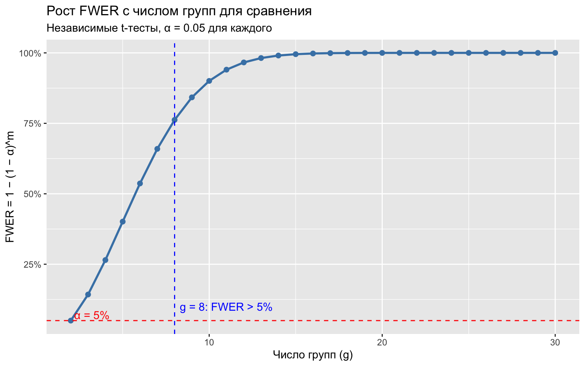
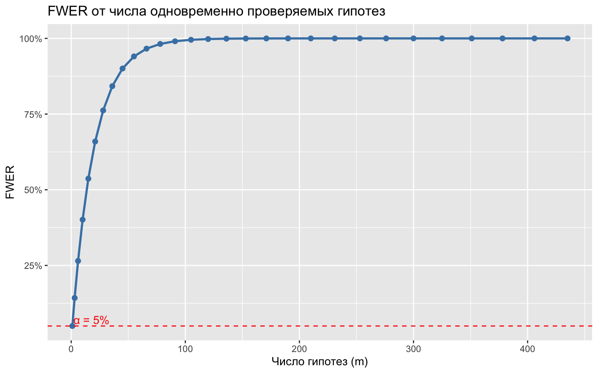
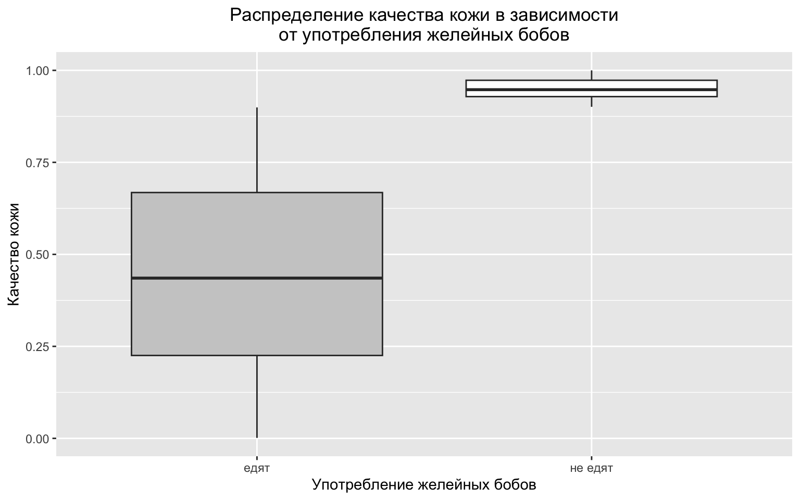
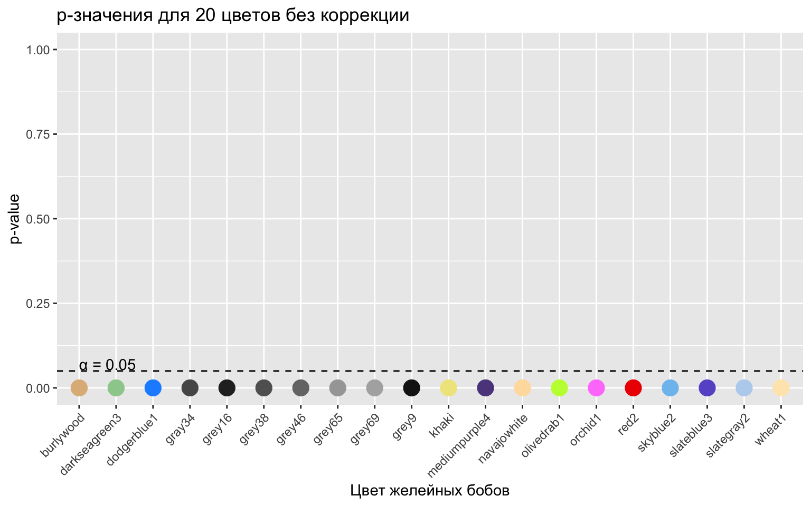
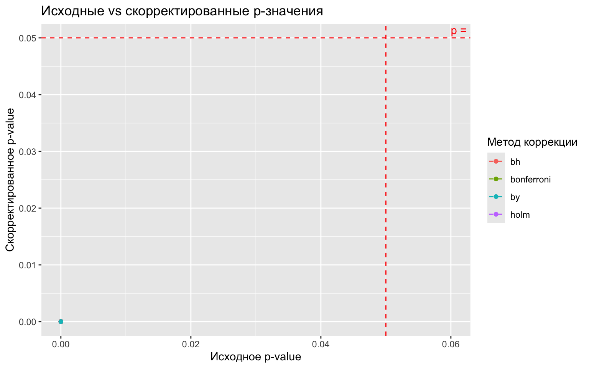
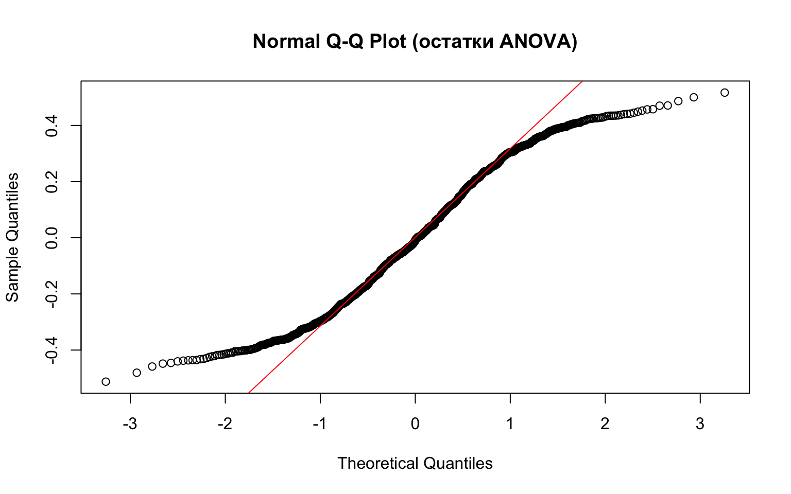
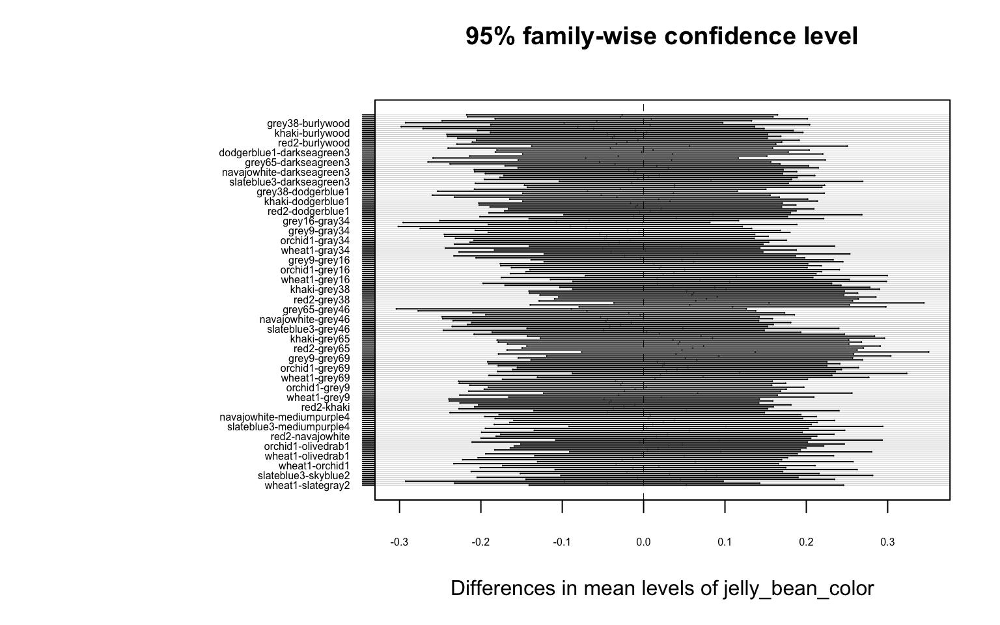

Прежде чем перейти к примеру, посмотрим, насколько быстро растёт групповая вероятность ошибки первого рода (FWER), когда мы сравниваем сразу несколько групп.
2.1.1 Как быстро растёт FWER?
При \(g\) группах и уровне значимости \(\alpha = 0.05\) число попарных сравнений равно \(\binom{g}{2} = g(g-1)/2\). Если проводить каждый тест независимо, то FWER = \(1 - (1 - \alpha)^m\), где \(m\) — число тестов.
# Построим таблицу: для каждого числа групп g считаем число попарных гипотез# и соответствующий FWER при alpha = 0.05library(dplyr)library(ggplot2)df <-data.frame(n_group =2:30) %>%mutate(# Число попарных сравнений: C(g, 2) = g! / (2! * (g-2)!)n_hyp =factorial(n_group) / (factorial(n_group -2) *factorial(2)),# FWER при независимых тестах: 1 - (1 - 0.05)^merror_rate =1-0.95^n_hyp )# ── График 1: FWER от числа групп ────────────────────────────────────────────ggplot(df, aes(x = n_group, y = error_rate)) +geom_line(color ="steelblue", linewidth =1) +geom_point(color ="steelblue", size =2) +# Горизонтальная линия: номинальный уровень 5%geom_hline(yintercept =0.05, color ="red", linetype ="dashed") +# Вертикальная линия: уже при 8 группах FWER перевалил за 5%geom_vline(xintercept =8, color ="blue", linetype ="dashed") +annotate("text", x =8.3, y =0.1,label ="g = 8: FWER > 5%", color ="blue", hjust =0) +annotate("text", x =2.2, y =0.07,label ="α = 5%", color ="red", hjust =0) +scale_y_continuous(labels = scales::percent) +labs(title ="Рост FWER с числом групп для сравнения",subtitle ="Независимые t-тесты, α = 0.05 для каждого",x ="Число групп (g)",y ="FWER = 1 − (1 − α)^m" )

# ── График 2: FWER от числа гипотез ──────────────────────────────────────────# Иногда удобнее смотреть непосредственно на число тестов, а не группggplot(df, aes(x = n_hyp, y = error_rate)) +geom_line(color ="steelblue", linewidth =1) +geom_point(color ="steelblue", size =2) +geom_hline(yintercept =0.05, color ="red", linetype ="dashed") +annotate("text", x =2, y =0.07,label ="α = 5%", color ="red", hjust =0) +scale_y_continuous(labels = scales::percent) +labs(title ="FWER от числа одновременно проверяемых гипотез",x ="Число гипотез (m)",y ="FWER" )

Вывод. Даже при \(g = 8\) группах мы получаем 28 попарных сравнений, и FWER уже превышает 5%. При \(g = 20\) (именно столько цветов в примере ниже) FWER стремится к 100%. Значит, хотя бы одна «ложная» значимая находка практически гарантирована — даже если никакого эффекта нет.
library(ggplot2)# Боксплот: распределение acne_condition по группам едыggplot(data) +geom_boxplot(aes(x = eating, y = acne_condition, fill = eating)) +scale_fill_manual(breaks =c("едят", "не едят"),values =c("grey80", "white") ) +theme(legend.position ="none",plot.title =element_text(hjust =0.5)) +xlab("Употребление желейных бобов") +ylab("Качество кожи") +ggtitle("Распределение качества кожи в зависимости\nот употребления желейных бобов")

2.2.3 1.3 t-тест: общий эффект
# H₀: употребление желейных бобов не влияет на качество кожи# Двухвыборочный t-тест Велча (не предполагает равенства дисперсий)t.test(acne_condition ~ eating, data = data)
Welch Two Sample t-test
data: acne_condition by eating
t = -56.571, df = 993.62, p-value < 2.2e-16
alternative hypothesis: true difference in means between group едят and group не едят is not equal to 0
95 percent confidence interval:
-0.5242963 -0.4891417
sample estimates:
mean in group едят mean in group не едят
0.4439526 0.9506716
p-value высокое → не отвергаем H₀. Нет оснований считать, что желейные бобы вызывают акне.
2.3 Часть II. Гетерогенный эффект по цвету
2.3.1 2.1 Добавляем цвет желейных бобов
library(dplyr)# Генерируем 20 случайных цветов из палитры Rset.seed(1)colors <-sample(colors(), 20)# Присваиваем каждому испытуемому цвет желейных бобовset.seed(1)data$jelly_bean_color <-sample(colors, people, replace =TRUE)# Те, кто не ест бобы, получают NA вместо цветаdata <- data %>%mutate(jelly_bean_color =ifelse(eating =="не едят", NA, jelly_bean_color))head(data)
# Функция: t-тест для одного цвета (цвет vs «не ел»)test_color <-function(color) { subset_data <- data %>%filter(jelly_bean_color == color |is.na(jelly_bean_color)) pval <-t.test(acne_condition ~ eating, data = subset_data)$p.valuereturn(pval)}# Проверяем первые три цвета вручнуюcat("p-value для цвета 1:", test_color(colors[1]), "\n")
p-value для цвета 1: 5.597485e-21
cat("p-value для цвета 2:", test_color(colors[2]), "\n")
p-value для цвета 2: 2.204699e-15
cat("p-value для цвета 3:", test_color(colors[3]), "\n")
p-value для цвета 3: 6.215338e-16
# Запускаем для всех 20 цветовttest_data <-data.frame(color = colors,pval =sapply(colors, test_color))# Рассеянный график p-значенийggplot(ttest_data) +geom_point(aes(x = color, y = pval, color = color), size =5) +scale_color_manual(breaks = colors, values = colors) +geom_hline(aes(yintercept =0.05), linetype ="dashed") +annotate("text", x =1, y =0.07, label ="α = 0.05",hjust =0, color ="black") +ylim(0, 1) +xlab("Цвет желейных бобов") +ylab("p-value") +theme(legend.position ="none",axis.text.x =element_text(angle =45, hjust =1)) +ggtitle("p-значения для 20 цветов без коррекции")

# Один цвет оказался «значимым» — но это случайность!cat("p-value для цвета 5 (\"значимый\"):", test_color(colors[5]), "\n")
p-value для цвета 5 ("значимый"): 3.261665e-17
2.4 Часть III. Коррекция p-значений
2.4.1 3.1 Методы коррекции
# Добавляем все четыре стандартных коррекцииttest_data$bonferroni <-p.adjust(ttest_data$pval, method ="bonferroni")ttest_data$holm <-p.adjust(ttest_data$pval, method ="holm")ttest_data$bh <-p.adjust(ttest_data$pval, method ="BH")ttest_data$by <-p.adjust(ttest_data$pval, method ="BY")head(ttest_data)
library(tidyr)# Переводим в длинный формат через tidyr::pivot_longer# (надёжнее data.table::melt, которая игнорирует variable.name)long_ttest_data <- ttest_data %>%select(-color) %>%# убираем столбец с цветомpivot_longer(cols =-pval,names_to ="correction_type",values_to ="adj_pval" )# График: скорректированные p-значения vs исходныеggplot(long_ttest_data, aes(x = pval, y = adj_pval, colour = correction_type)) +geom_point() +geom_line(linetype ="dashed") +geom_hline(yintercept =0.05, colour ="red", linetype ="dashed") +geom_vline(xintercept =0.05, colour ="red", linetype ="dashed") +annotate("text", x =0.06, y =0.05, label ="p = 5%",colour ="red", hjust =0, vjust =-0.5) +labs(title ="Исходные vs скорректированные p-значения",x ="Исходное p-value",y ="Скорректированное p-value",colour ="Метод коррекции" )

# Таблица: разворачиваем обратно в широкий формат для удобного просмотраwide_ttest_data <- long_ttest_data %>%pivot_wider(names_from ="correction_type", values_from ="adj_pval")wide_ttest_data %>%arrange(pval) %>%head(10)
Вывод. После любой коррекции (Bonferroni, Holm, BH, BY) ни один цвет не даёт значимого результата — как и должно быть, ведь никакого истинного эффекта в данных нет.
2.5 Часть IV. ANOVA — глобальный тест
До сих пор мы тестировали каждый цвет отдельно с помощью t-тестов. Более правильный подход — сначала задать глобальный вопрос: различаются ли средние значения акне хотя бы для одной пары цветов? Для этого используется дисперсионный анализ (ANOVA).
2.5.1 4.1 Проверка предпосылок ANOVA
One-way ANOVA требует трёх условий:
Нормальность ошибок внутри каждой группы (тест Шапиро–Уилка, QQ-plot).
Гомоскедастичность: дисперсии одинаковы во всех группах (тест Левена / Бартлетта).
Независимость наблюдений — обеспечивается рандомизацией.
2.5.1.1 Нормальность: тест Шапиро–Уилка
# Проверяем нормальность внутри каждой цветовой группы.# shapiro.test() требует не менее 3 и не более 5000 наблюдений.shapiro_results <- data %>%filter(!is.na(jelly_bean_color)) %>%group_by(jelly_bean_color) %>%summarise(n =n(),W_stat =shapiro.test(acne_condition)$statistic,p_val =shapiro.test(acne_condition)$p.value,.groups ="drop" )shapiro_results %>%arrange(p_val)
# QQ-plot для визуальной проверки нормальности остатков# Строим residuals из линейной модели (ANOVA как OLS)aov_model <-aov(acne_condition ~ jelly_bean_color,data = data %>%filter(!is.na(jelly_bean_color)))# QQ-plot остатковqqnorm(residuals(aov_model), main ="Normal Q-Q Plot (остатки ANOVA)")qqline(residuals(aov_model), col ="red")

Поскольку \(acne\_condition \sim U(0,1)\), нормальность нарушена теоретически, но при достаточно большом числе наблюдений в каждой группе CLT смягчает это нарушение. Тест Шапиро–Уилка сигнализирует о нарушении для некоторых групп → это повод применить непараметрический тест Краскела–Уоллиса.
2.5.1.2 Гомоскедастичность: тест Левена и тест Бартлетта
library(car) # для leveneTest()eating_data <- data %>%filter(!is.na(jelly_bean_color))# Тест Левена: устойчив к нарушениям нормальностиleveneTest(acne_condition ~ jelly_bean_color, data = eating_data)
Levene's Test for Homogeneity of Variance (center = median)
Df F value Pr(>F)
group 19 0.7174 0.8033
870
# Тест Бартлетта: более мощный, но чувствителен к ненормальностиbartlett.test(acne_condition ~ jelly_bean_color, data = eating_data)
Bartlett test of homogeneity of variances
data: acne_condition by jelly_bean_color
Bartlett's K-squared = 6.4383, df = 19, p-value = 0.9967
Интерпретация. Если p-value тестов Левена и Бартлетта высокое (> 0.05), гомоскедастичность не нарушена → можно проводить стандартную ANOVA. При значимом результате переходим к Welch ANOVA.
2.5.2 4.2 One-way ANOVA
# H₀: средние значения acne_condition одинаковы для всех 20 цветов# H₁: хотя бы одно среднее отличаетсяanova_result <-aov(acne_condition ~ jelly_bean_color, data = eating_data)summary(anova_result)
Df Sum Sq Mean Sq F value Pr(>F)
jelly_bean_color 19 1.04 0.05452 0.835 0.666
Residuals 870 56.83 0.06532
Интерпретация. Незначимый F-тест (p > 0.05) означает: нет оснований отвергнуть H₀ о равенстве всех средних. Ни один цвет желейных бобов не оказывает значимого влияния на состояние кожи — и это правильный ответ, ведь эффект в данные не заложен.
2.5.3 4.3 ANOVA как частный случай OLS-регрессии
# One-way ANOVA ≡ линейная регрессия с (g-1) дамми-переменными.# lm() и aov() дают одинаковые F-статистику и p-value.lm_result <-lm(acne_condition ~ jelly_bean_color, data = eating_data)# F-тест на совместную значимость всех цветовых коэффициентовanova(lm_result)
Analysis of Variance Table
Response: acne_condition
Df Sum Sq Mean Sq F value Pr(>F)
jelly_bean_color 19 1.036 0.054521 0.8347 0.6659
Residuals 870 56.826 0.065317
Сравните F-статистику и p-value с результатом aov() выше — они идентичны. Регрессионный фреймворк удобнее: к нему легко добавить ковариаты (ANCOVA), кластерные стандартные ошибки и т.д.
2.5.4 4.4 Welch ANOVA (на случай нарушения гомоскедастичности)
# Если тест Левена/Бартлетта значим → используем Welch ANOVA,# которая не предполагает равенства дисперсий.# В R: oneway.test(..., var.equal = FALSE)oneway.test(acne_condition ~ jelly_bean_color,data = eating_data,var.equal =FALSE) # Welch ANOVA
One-way analysis of means (not assuming equal variances)
data: acne_condition and jelly_bean_color
F = 0.87091, num df = 19.00, denom df = 313.44, p-value = 0.6198
Welch ANOVA — безопасный выбор по умолчанию при неравных дисперсиях. Она жертвует небольшим количеством мощности, зато не требует гомоскедастичности.
2.6 Часть V. Непараметрическая альтернатива: тест Краскела–Уоллиса
Если нормальность внутри групп существенно нарушена (а у нас \(U(0,1)\)), вместо ANOVA применяют ранговый тест Краскела–Уоллиса.
# H₀: все 20 цветовых распределений одинаковы (по медиане/рангам)kruskal.test(acne_condition ~ jelly_bean_color, data = eating_data)
Kruskal-Wallis rank sum test
data: acne_condition by jelly_bean_color
Kruskal-Wallis chi-squared = 16.056, df = 19, p-value = 0.6536
При нормальных данных ANOVA мощнее. При нарушении нормальности — особенно в маленьких группах — Краскел–Уоллис предпочтительнее, так как не предполагает конкретной формы распределения.
2.7 Часть VI. Пост-хок тесты
ANOVA отвечает на вопрос «есть ли хоть одно различие?», но не говорит между какими именно парами групп оно есть. Для этого нужны пост-хок тесты.
2.7.1 6.1 Tukey HSD (все попарные сравнения, контроль FWER)
# Tukey HSD — стандартный выбор после значимой ANOVA при 3+ группах.# Контролирует FWER для всех g(g-1)/2 пар через studentized range.tukey_result <-TukeyHSD(anova_result)# Показываем только пары с наименьшими p-значениямиtukey_df <-as.data.frame(tukey_result$jelly_bean_color)tukey_df$pair <-rownames(tukey_df)tukey_df %>%arrange(`p adj`) %>%head(10) %>% knitr::kable(digits =4,caption ="Tukey HSD: 10 пар с наименьшими скорректированными p-value")
Tukey HSD: 10 пар с наименьшими скорректированными p-value
diff
lwr
upr
p adj
pair
slateblue3-grey38
0.1541
-0.0364
0.3446
0.3070
slateblue3-grey38
slateblue3-grey65
0.1372
-0.0760
0.3504
0.7425
slateblue3-grey65
slateblue3-grey16
0.1140
-0.0716
0.2996
0.8104
slateblue3-grey16
wheat1-grey38
0.1093
-0.0792
0.2978
0.8756
wheat1-grey38
slateblue3-grey69
0.1180
-0.0875
0.3235
0.8845
slateblue3-grey69
grey38-gray34
-0.1071
-0.2956
0.0815
0.8943
grey38-gray34
grey46-grey38
0.1058
-0.0868
0.2984
0.9203
grey46-grey38
khaki-grey38
0.1015
-0.0871
0.2900
0.9332
khaki-grey38
slateblue3-mediumpurple4
0.1012
-0.0915
0.2939
0.9466
slateblue3-mediumpurple4
slateblue3-olivedrab1
0.0947
-0.0909
0.2803
0.9592
slateblue3-olivedrab1
# Визуализация доверительных интервалов Tukeypar(mar =c(5, 15, 4, 2)) # увеличиваем левое поле для длинных метокplot(tukey_result, las =1, cex.axis =0.5)

Если ни один ДИ не пересекает ноль — нет значимых попарных различий. Именно это мы и видим: все пары включают 0 в ДИ.
2.7.2 6.2 Тест Данна (пост-хок после Краскела–Уоллиса, ранговый)
# Тест Данна — непараметрический аналог Tukey HSD.# Используется после значимого Краскела–Уоллиса, когда нормальность нарушена.# Пакет dunn.test реализует поправку Бонферрони/Холма/BH.# install.packages("dunn.test") # раскомментировать при первом запускеlibrary(dunn.test)dunn_result <-dunn.test(x = eating_data$acne_condition,g = eating_data$jelly_bean_color,method ="bh", # поправка Benjamini–Hochbergalph =0.05,kw =TRUE, # вывести результат теста KW перед пост-хокlabel =TRUE)
# Собираем результаты в таблицуdunn_df <-data.frame(comparison = dunn_result$comparisons,Z = dunn_result$Z,p_raw = dunn_result$P,p_adjusted = dunn_result$P.adjusted) %>%arrange(p_adjusted) %>%head(10)knitr::kable(dunn_df, digits =4,caption ="Тест Данна (поправка BH): 10 пар с наименьшими p-value")
Тест Данна (поправка BH): 10 пар с наименьшими p-value
comparison
Z
p_raw
p_adjusted
grey38 - slateblue3
-2.9153
0.0018
0.3376
mediumpurple4 - slategray2
-0.0349
0.4861
0.4887
navajowhite - olivedrab1
0.0358
0.4857
0.4909
khaki - wheat1
-0.1751
0.4305
0.4927
darkseagreen3 - dodgerblue1
0.0377
0.4850
0.4928
dodgerblue1 - red2
-0.1667
0.4338
0.4935
navajowhite - slategray2
0.0743
0.4704
0.4938
grey46 - red2
0.5491
0.2915
0.4945
grey16 - mediumpurple4
-0.2580
0.3982
0.4945
red2 - skyblue2
0.1977
0.4216
0.4945
2.8 Сводка: как выбирать тест
Ситуация
Рекомендуемый тест
Нормальность + гомоскедастичность
One-way ANOVA → Tukey HSD
Нормальность, но неравные дисперсии
Welch ANOVA → Games–Howell
Нарушена нормальность
Краскел–Уоллис → тест Данна (BH)
Хотим скорректировать заранее заданный набор p-values
Bonferroni / Holm / BH / BY через p.adjust()
Главный вывод практикума.
Проводя 20 отдельных тестов без коррекции, мы почти гарантированно получим хотя бы один «значимый» результат — даже в отсутствие реального эффекта. ANOVA + пост-хок тесты и коррекции p-значений — это инструменты, которые позволяют контролировать вероятность таких ложных открытий.